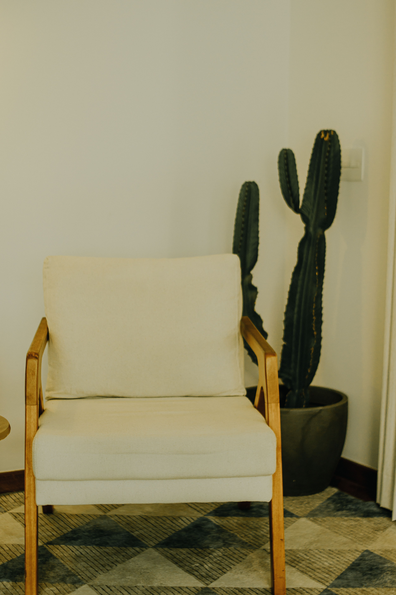
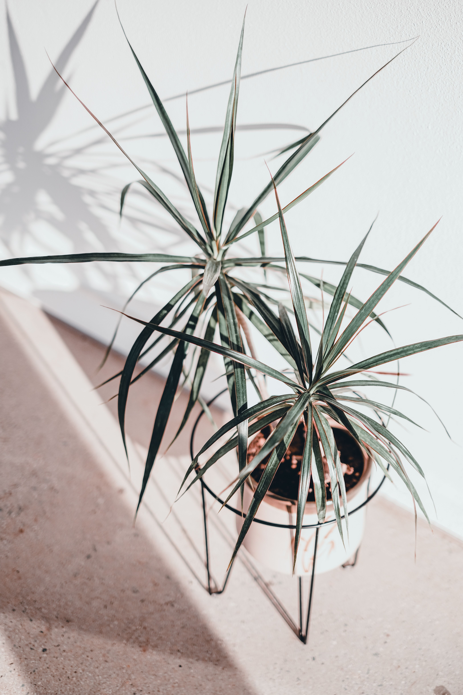

En este artículo
Introducción
Aprende a podar plantas y arbustos con criterios sencillos: cuándo intervenir, qué herramientas utilizar, qué ramas retirar y cómo evitar errores que debilitan las plantas.
Una buena preparación evita decisiones impulsivas y permite concentrar el esfuerzo donde realmente aporta resultados. Antes de comprar productos, retirar plantas o reorganizar un espacio, conviene observar las condiciones existentes y definir un objetivo concreto.
Esta guía desarrolla un proceso práctico, pensado para aplicar por etapas. Las recomendaciones generales deben adaptarse al clima, a la especie vegetal, al tipo de vivienda y a las instrucciones de fabricantes cuando intervienen herramientas, equipos o productos.
Cuando una tarea implica ramas grandes, instalaciones eléctricas, trabajos en altura, estructuras, productos peligrosos o una situación que no puedes evaluar con seguridad, recurre a un profesional cualificado.
Qué debes observar antes de empezar a podar
Podar no consiste simplemente en cortar ramas para que una planta ocupe menos espacio. Una poda bien planteada busca retirar partes dañadas, mejorar la estructura, controlar un crecimiento problemático o favorecer la salud general sin eliminar tejido sano de forma innecesaria. Por eso, antes de acercar las tijeras, observa la planta completa y define qué problema quieres resolver.
Identifica primero la especie siempre que sea posible. Árboles, arbustos de flor, rosales, trepadoras y plantas perennes pueden responder de manera distinta a la poda. También cambia el momento adecuado: algunas especies florecen sobre madera formada el año anterior y una poda realizada en la época equivocada puede eliminar gran parte de los botones florales.
Revisa ramas secas, rotas, enfermas o que se cruzan. Estas suelen ser candidatas prioritarias, pero incluso aquí conviene actuar con criterio. Si sospechas una enfermedad importante, consulta recomendaciones específicas para esa especie y desinfecta las herramientas cuando corresponda para reducir el riesgo de transmisión.
Observa la forma natural de la planta. Muchos arbustos se mantienen mejor cuando la poda respeta su porte, en lugar de convertirlos repetidamente en formas rígidas. Cortar solo para igualar la superficie exterior puede producir una capa densa de brotes y un interior con poca luz.
Comprueba también el entorno. Una rama que roza una ventana, bloquea un paso o invade otra planta puede necesitar corrección. Sin embargo, si el problema se debe a que la especie fue plantada en un espacio demasiado pequeño, podar constantemente no solucionará la causa a largo plazo.
Evita trabajar con prisas. Da varios pasos atrás durante la poda para revisar el equilibrio. Es mucho más fácil retirar otra rama después que recuperar una que ya fue cortada.
En árboles grandes, ramas pesadas, proximidad a cables eléctricos o trabajos en altura, la opción segura es recurrir a un arborista o profesional cualificado. Una guía doméstica no sustituye conocimientos de seguridad, técnicas de trepa ni evaluación estructural.
Cómo convertir la observación en un plan
Trabaja de forma gradual y vuelve a observar el resultado antes de realizar el siguiente cambio. Esta pausa permite corregir decisiones, evitar intervenciones excesivas y adaptar el trabajo a las condiciones reales del espacio, la planta o la vivienda.
Herramientas adecuadas y cortes limpios
Las tijeras de poda manuales son apropiadas para tallos y ramas finas dentro de la capacidad indicada por el fabricante. Para diámetros mayores existen podaderas de dos manos y sierras de poda. Forzar una herramienta pequeña sobre una rama gruesa puede dañar tanto la herramienta como el tejido vegetal.

Antes de empezar, limpia las hojas y comprueba que estén afiladas. Una cuchilla sin filo aplasta y desgarra en lugar de producir un corte limpio. Revisa tornillos, seguros y mangos; una herramienta con piezas flojas no debe utilizarse.
Utiliza guantes adecuados y protección ocular cuando exista riesgo de ramas, espinas o fragmentos. El equipo de protección depende de la tarea. Para herramientas motorizadas, sigue estrictamente el manual y utiliza los elementos de seguridad recomendados.
En ramas pequeñas, realiza el corte en una posición que no deje un muñón largo pero que tampoco dañe la estructura de unión. En árboles, el collar de la rama es una referencia importante y no debe eliminarse con cortes pegados al tronco.
Las ramas pesadas pueden desgarrar la corteza si se intenta cortarlas de una sola vez. La técnica de varios cortes permite reducir el peso antes del corte final, pero si no conoces el procedimiento o la rama puede caer sobre personas o bienes, contrata ayuda profesional.
No apliques pinturas o selladores de poda de forma automática. En muchas situaciones no son necesarios y pueden interferir con procesos naturales. Utiliza productos solo cuando exista una recomendación específica y fundamentada para la especie o problema.
Después de trabajar, limpia, seca y guarda las herramientas. Si has cortado tejido enfermo, sigue recomendaciones de higiene apropiadas antes de pasar a otra planta.
Aplicación práctica paso a paso
Trabaja de forma gradual y vuelve a observar el resultado antes de realizar el siguiente cambio. Esta pausa permite corregir decisiones, evitar intervenciones excesivas y adaptar el trabajo a las condiciones reales del espacio, la planta o la vivienda.
Qué ramas conviene retirar primero
Una secuencia sencilla ayuda a evitar podas excesivas. Empieza por madera claramente muerta, ramas rotas y partes con daños evidentes. Después evalúa ramas que se cruzan o rozan entre sí, porque el contacto continuo puede producir heridas.
Los brotes que crecen hacia el interior pueden retirarse cuando congestionan la copa o el centro del arbusto. El objetivo no es vaciar por completo la planta, sino mejorar distribución y permitir que luz y aire lleguen de forma razonable.
Los chupones que aparecen desde la base o raíces pueden competir con la estructura principal, especialmente en plantas injertadas. Identifica su origen antes de retirarlos, porque no todos los brotes basales son indeseables.
En arbustos viejos, una renovación gradual suele ser más prudente que eliminar gran cantidad de madera de una vez. Retirar algunas ramas antiguas desde la base durante varias temporadas puede estimular brotes nuevos manteniendo volumen y reservas.
Cuando reduzcas longitud, corta hacia una rama lateral o yema orientada en una dirección adecuada. Evita dejar muchos extremos sin función que luego se sequen o produzcan brotes débiles.

No elimines un porcentaje grande de copa solo para reducir trabajo futuro. La poda severa puede provocar estrés, quemaduras en ramas antes sombreadas y una respuesta de brotes vigorosos que obliga a intervenir nuevamente.
Cada planta necesita una estrategia distinta. La regla útil es retirar lo necesario para alcanzar un objetivo concreto y detenerse cuando ese objetivo se ha cumplido.
Qué conviene revisar antes de continuar
Trabaja de forma gradual y vuelve a observar el resultado antes de realizar el siguiente cambio. Esta pausa permite corregir decisiones, evitar intervenciones excesivas y adaptar el trabajo a las condiciones reales del espacio, la planta o la vivienda.
Cómo elegir el momento de poda
El calendario de poda depende de especie, clima, estado sanitario y objetivo. No existe un mes universal que sirva para todas las plantas. Antes de podar un ejemplar valioso, consulta información específica para tu región.
Muchos arbustos que florecen sobre madera del año anterior se podan después de la floración si necesitan corrección. Si se cortan antes, pueden perder flores. Otros florecen sobre crecimiento nuevo y toleran una poda en otro momento.
La madera muerta o una rama rota que representa un riesgo puede requerir intervención independientemente de la época. Aun así, considera condiciones meteorológicas y evita trabajar durante tormentas, viento fuerte o situaciones inseguras.
En periodos de calor extremo o sequía, una poda intensa puede aumentar el estrés. La planta ya está gestionando falta de agua y temperaturas altas, por lo que conviene posponer trabajos no urgentes.
En climas con heladas, una poda que estimula brotes tiernos poco antes del frío puede ser contraproducente. Las recomendaciones locales son especialmente importantes porque las fechas varían mucho entre regiones.
Después de podar, mantén los cuidados normales de la especie. No compenses una poda con exceso de fertilizante o riego. Observa la respuesta y permite tiempo para que la planta se recupere.
Lleva un pequeño registro de fecha, especie y trabajo realizado. Con el tiempo sabrás cómo responde cada planta de tu jardín y podrás ajustar la siguiente intervención.
Mantenimiento y seguimiento
Trabaja de forma gradual y vuelve a observar el resultado antes de realizar el siguiente cambio. Esta pausa permite corregir decisiones, evitar intervenciones excesivas y adaptar el trabajo a las condiciones reales del espacio, la planta o la vivienda.
Errores frecuentes que conviene evitar
Uno de los errores más comunes es empezar a cortar sin un objetivo. Cuando cada rama se elimina solo porque sobresale, la planta puede perder su forma natural y terminar con una estructura más difícil de mantener.

Otro error es utilizar la misma técnica para todas las especies. Un seto formal, un arbusto de flor y un árbol joven no se manejan igual. Investigar antes de intervenir ahorra años de correcciones.
Las herramientas sucias o desafiladas también crean problemas. Además de producir cortes deficientes, pueden transportar material vegetal entre ejemplares. La limpieza forma parte del trabajo, no es un detalle opcional.
Evita dejar muñones largos o realizar cortes que eliminen tejido del tronco. En ramas de árboles, respetar la zona de unión favorece la respuesta natural de la planta.
No podes por encima de tu capacidad física. Las ramas pesadas cambian de dirección al caer y una sierra en altura añade riesgos importantes. Saber cuándo detenerse es parte de una poda responsable.
Después de una poda importante, no esperes que la planta recupere inmediatamente una apariencia densa. Observa su respuesta durante la temporada y evita volver a cortar solo porque aparecen brotes nuevos.
Finalmente, conserva fotografías antes y después. Compararlas permite evaluar si el objetivo se cumplió y planificar una intervención más precisa la próxima vez.
Cómo mantener los resultados a largo plazo
Después de completar las tareas principales, revisa el espacio durante las semanas siguientes. Los resultados reales aparecen con el uso, el crecimiento de las plantas y los cambios de clima, no únicamente al terminar el trabajo.
Anota qué funcionó y qué requirió más tiempo del previsto. Esta información permite preparar la siguiente temporada con mayor precisión y evita repetir soluciones poco prácticas.
Evita añadir nuevas tareas solo porque queda espacio en el calendario. El mantenimiento sostenible consiste en hacer lo necesario con regularidad, no en intervenir constantemente.
Si una condición cambia —una planta crece, aparece una fuga, el suelo permanece húmedo o una zona deja de funcionar— vuelve al diagnóstico antes de aplicar una solución.
Fotografías tomadas desde los mismos puntos son una herramienta sencilla para comparar. En jardines permiten ver crecimiento y estacionalidad; en el hogar muestran qué zonas vuelven a acumular objetos.
Finalmente, revisa seguridad, herramientas y accesos. Un resultado bonito o productivo nunca debe depender de una instalación inestable, un producto mal almacenado o una tarea que supera tu capacidad técnica.
Preguntas frecuentes
¿Cuál es el mejor momento para podar?
Depende de la especie, el clima y el objetivo. Consulta recomendaciones específicas, especialmente para arbustos de flor.
¿Debo podar todas las plantas cada año?
No. Muchas plantas solo necesitan retirar partes dañadas o una corrección ocasional.
¿Qué hago con una rama muy gruesa?
Si es pesada, está alta o puede causar daños al caer, recurre a un profesional cualificado.
¿Hay que sellar todos los cortes?
No de forma automática. Utiliza selladores solo cuando exista una recomendación específica.
¿Cómo evito transmitir enfermedades al podar?
Mantén herramientas limpias y sigue recomendaciones de desinfección cuando trabajes con plantas enfermas.
Conclusión
Cómo podar plantas y arbustos correctamente: guía para principiantes resulta mucho más sencillo cuando el trabajo se divide en prioridades claras y se evita intervenir por costumbre.
Empieza observando, corrige primero los problemas de seguridad y después avanza con las tareas que mejoran funcionamiento, salud y mantenimiento a largo plazo.
No necesitas realizar todos los cambios en un solo día. Trabajar por etapas permite comprobar resultados y evita gastar tiempo o dinero en soluciones que no eran necesarias.
Con un pequeño registro de lo realizado y revisiones periódicas, cada temporada será más fácil de planificar y el espacio responderá mejor a las necesidades reales.